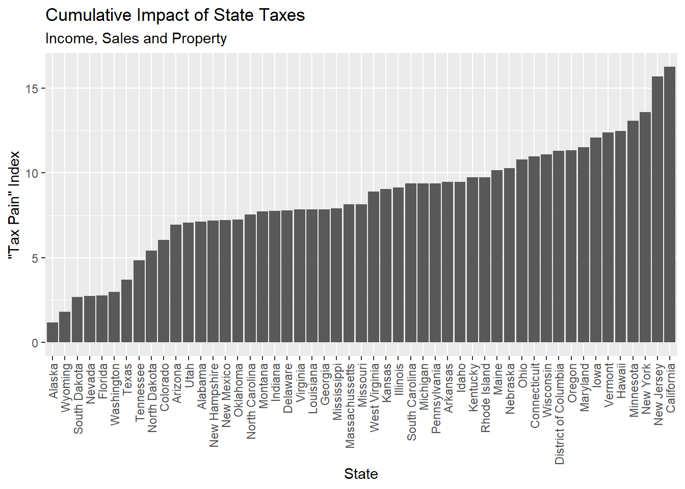

suppressPackageStartupMessages(library(tidyverse))
suppressPackageStartupMessages(library(plotly))
state_rates <- read_csv("data/state_rate.csv",col_types = "fnnn") State Taxes: It’s not just about Income
R
Which States Impose the Most “Tax Pain?”
Much of the discussion around tax burdens focuses on income taxes but, at the state level, that leaves out two other big sources of tax liability, sales and property taxes. Here we’ll quickly look at the interplay of all three taxes in a graphical way. This can inform our thinking about how attractive it is to live in each state and on public policy questions involving tax fairness. The plotly package lets us easily create an interactive 3D scatter plot that is uniquely useful to visualize this.
Sales taxes vary greatly by state but, for lower income people, might be the biggest tax burden. Indeed, since low-income families spend a larger fraction of their income, these taxes are “regressive” since the relative burden grows as income falls. Income taxes are typically “progressive” since, in most states, the rate grows with income levels. Property taxes aren’t directly levied on renters but the landlords pass the tax through via higher rents, so everyone pays. Let’s take a quick look at how tax rates vary by state and category.
The tax data was found in three different places:
- Income tax rates from https://taxfoundation.org/state-individual-income-tax-rates-brackets-2019/
- Property tax Rates from https://wallethub.com/edu/states-with-the-highest-and-lowest-property-taxes/11585/
- Sales Tax Rates https://www.salestaxinstitute.com/resources/rates
I make some choices in how to present the data. First of all, I use the top marginal rates, so this represents the “worst-case” tax burden. It should be representative of the overall tax structure and useful to compare across states. Next, I add average municipal income taxes computed by the Tax Foundation for each state to the state income tax rate. If you live in New York City, this will substantially understate your tax burden and overstate it elsewhere. Some municipalities levy sales taxes as well but I do NOT include these because they vary so widely and we don’t have all day. Also, municipalities love to tax people who can’t vote, like out of towners, with hotel and rental car taxes. These would not affect your view of where to live. How about excise taxes on gasoline, cigarettes, etc? Not included.
I already combined the data from each source with the adjustments mentioned above into a single CSV file. Load it with the required libraries.
Let’s take a quick look at the summary statistics.
summary(state_rates[,2:4]) income_tax sales_tax property_tax
Min. : 0.000 Min. :0.000 Min. :0.270
1st Qu.: 4.925 1st Qu.:4.375 1st Qu.:0.730
Median : 5.950 Median :6.000 Median :0.980
Mean : 5.835 Mean :5.062 Mean :1.119
3rd Qu.: 7.190 3rd Qu.:6.250 3rd Qu.:1.550
Max. :13.300 Max. :7.250 Max. :2.440 Some states have no personal income tax at all but have to raise revenue somehow. Most commonly, sales tax forms a big part of the budget. Is there a pattern where lower income tax rates correlate with higher sales or property taxes? A correlation matrix provides a quick check.
knitr::kable(cor(state_rates[2:4]))| income_tax | sales_tax | property_tax | |
|---|---|---|---|
| income_tax | 1.0000000 | 0.0292638 | 0.1074844 |
| sales_tax | 0.0292638 | 1.0000000 | 0.1115520 |
| property_tax | 0.1074844 | 0.1115520 | 1.0000000 |
It doesn’t look like there is any relationship.
Tax rates are not the same thing as cash out of pocket. As mentioned above, several issues affect the translation of rates to dollars. Ideally, we would like to know which states are the most expensive to live in, tax-wise. We don’t care which pocket it comes out of but we have to make assumptions.
Let’s add adjustment factors for the impact of sales and property taxes relative to income taxes. This will let us add all three together to come up with a “tax pain” index. In theory, property taxes are levied according to a percentage of the value of the home. But there are complex formulas that go beyond just the published “rate.” In New York, it turns out that the median property tax bill is roughly equal to the median income tax liability, so I chose an adjustment factor of 1.0. How much of your taxable income is spent on consumption of things that sales tax is levied on? As mentioned above, low earners typically live hand-to-mouth. Affluent people can save more for deferred consumption, philanthropy or passing to heirs. I chose to assume 30% of household income is spent where sales taxes apply. Also note that sales tax rates are flat. Not only do poor people consume a higher fraction of their income, sales taxes aren’t scaled by income. You can play around with both of these adjustment factors based on what you want to see. There is no “correct” number. Low income families might pay no income tax and property taxes only indirectly, so sales tax is really the only tax that matters for them.
The tax pain index can be crudely interpreted as the fraction of a high earner’s income that will be paid in just state taxes. I call it an “index” because it can also be interpreted as a comparison of the relative tax burden across states for all wage earners.
# judge how to weight realized cost of sales and property relative to income tax.
sales_adj = 0.3 # assume we spend 30% of our taxable income on items subject to sales tax.
property_adj = 1.0 # assume median income tax liability is about equal to the property tax on the median home.
# use these adjustments to create ranking that we will use to color the markers in the plot.
# the sum of the adjusted values is a *rough* guide to the total tax burden.
state_rates_adj <- state_rates %>%
mutate(tax_pain = income_tax + (sales_tax * sales_adj) + (property_tax * property_adj)) %>%
arrange(desc(tax_pain))
knitr::kable(state_rates_adj[1:10,])| state | income_tax | sales_tax | property_tax | tax_pain |
|---|---|---|---|---|
| California | 13.30 | 7.25 | 0.77 | 16.245 |
| New Jersey | 11.25 | 6.63 | 2.44 | 15.679 |
| New York | 10.69 | 4.00 | 1.68 | 13.570 |
| Minnesota | 9.85 | 6.88 | 1.15 | 13.064 |
| Hawaii | 11.00 | 4.00 | 0.27 | 12.470 |
| Vermont | 8.75 | 6.00 | 1.83 | 12.380 |
| Iowa | 8.75 | 6.00 | 1.53 | 12.080 |
| Maryland | 8.60 | 6.00 | 1.10 | 11.500 |
| Oregon | 10.28 | 0.00 | 1.04 | 11.320 |
| District of Columbia | 8.95 | 6.00 | 0.55 | 11.300 |
state_rates_adj %>%
# reorder the state factor levels so they display in order of tax pain, not alphabetically
mutate(state = fct_reorder(state,tax_pain)) %>%
ggplot(aes(state,tax_pain)) + geom_col() +
labs(title = "Cumulative Impact of State Taxes",
subtitle = "Income, Sales and Property",
x = "State",
y = '"Tax Pain" Index') +
theme(axis.text.x = element_text(angle = 90, hjust = 1, vjust = 0.5))
No big surprises here. Florida, good. California, bad. Seeing Vermont at the high tax end while New Hampshire is at the low end is interesting. The two states are about the same size and have the same climate. The low tax state has over twice the population and a 33% higher median income. Just sayin’….
We would like to visualize the interplay of the three tax vectors and a 3D scatterplot is ideal for this. Further, the plotly package lets us interactively rotate the plot, which is critical for perceiving the 3D volume on a 2D surface. There are a lot of gratuitous uses of 3D visualization out there. This is one instance where 3D really adds to our understanding.
# Create 3d animated plot of 3 state tax rate dimensions,
# income, property and sales
plot_ly(state_rates_adj,x = ~income_tax,
y= ~sales_tax,
z= ~property_tax,
type="scatter3d",
mode="markers",
color = ~tax_pain,
hoverinfo = "text",
text= ~state) %>%
layout(title = "Major Tax Rates by State",
scene = list(xaxis = list(title = 'Income Tax'),
yaxis = list(title = 'Sales Tax'),
zaxis = list(title = 'Property Tax')))Play around with dragging the image and you start to appreciate the volume. Each piece of the tax picture gets an axis. The tax pain index is represented by color of the markers. You can quickly see that income tax is still the big driver of tax pain across the nation. New Jersey applies high taxes in all dimensions. California is heavily skewed to income tax but is comparatively low in the property tax dimension.
Nevada is a great state to live in if you have income and property. The state gets about a third of its revenue from out-of-state tourists who are spending liberally. Gambling is big, obviously, but a high sales tax is a way to get revenue from visitors while making the tax burden lighter on residents. As we know, sales taxes are regressive so, at first glance, the poor residents of Nevada might be the unintended losers from this scheme. Fortunately, Nevada lightens the relative burden on the poor by exempting drugs and groceries from sales tax.
Another great place to live if you hate taxes is in Washington State, on the Oregon border. Washington levies no income tax and Oregon levies no sales tax. I was surprised to see, in a quick Google maps search, no evidence that big box retailers shun the Washington side of the border. In theory, if an Oregon business knows you live in Washington they are supposed to charge taxes (Ha!). Across the border, Oregon residents could avoid paying sales tax in Washington by flashing an Oregon ID but that ended in the summer of 2019.
Finally, Alaska is the most tax-friendly state overall with low taxes in all dimensions. The state goes even further, though. Oil revenues go into a fund which pays a cash dividend to every resident, every year. Most recently it was $1,600 so some residents, in effect, receive taxes from the state. So, move there.